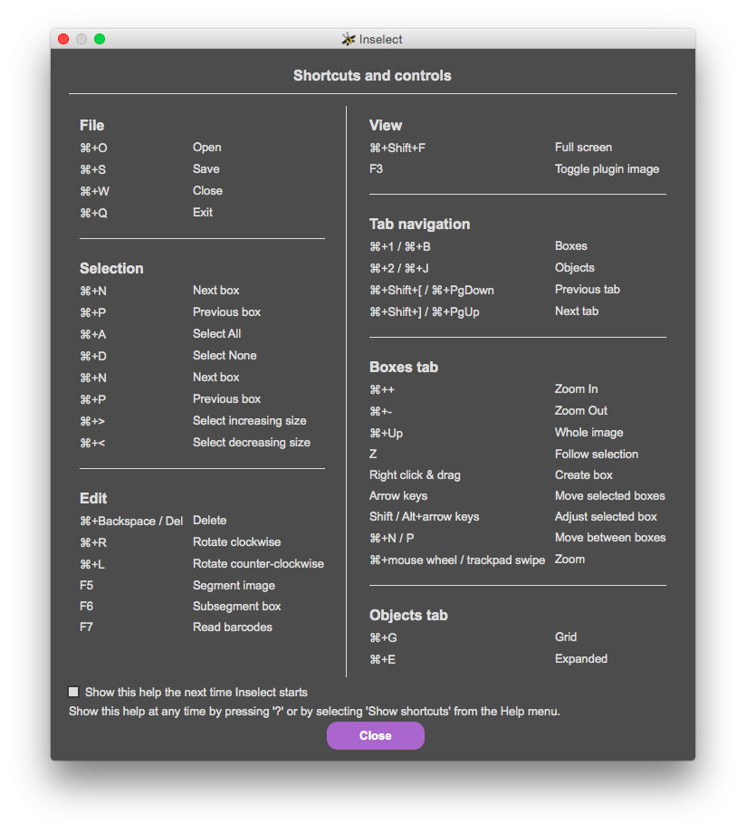
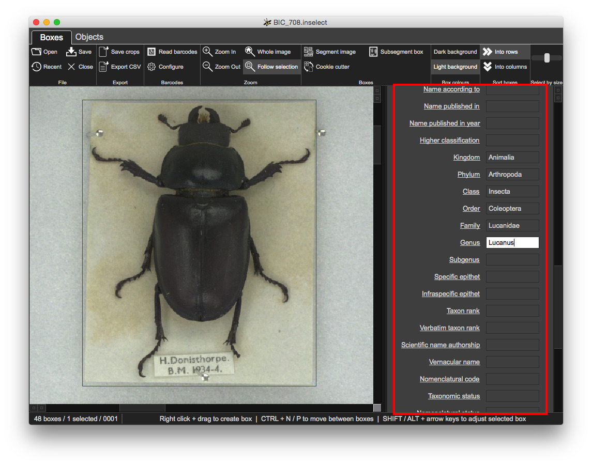
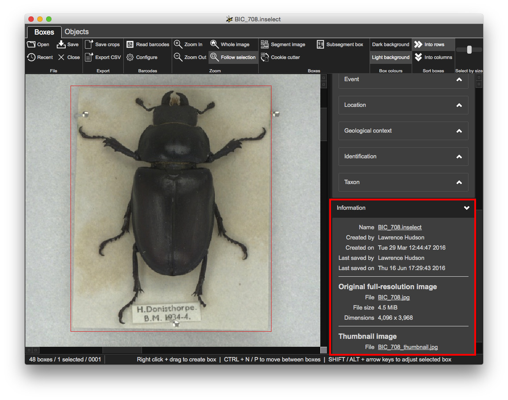
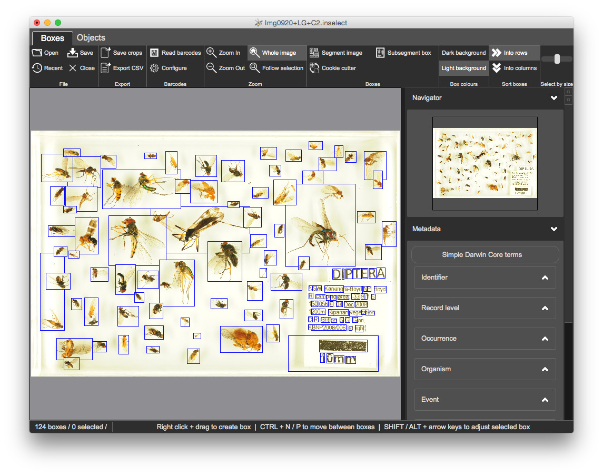
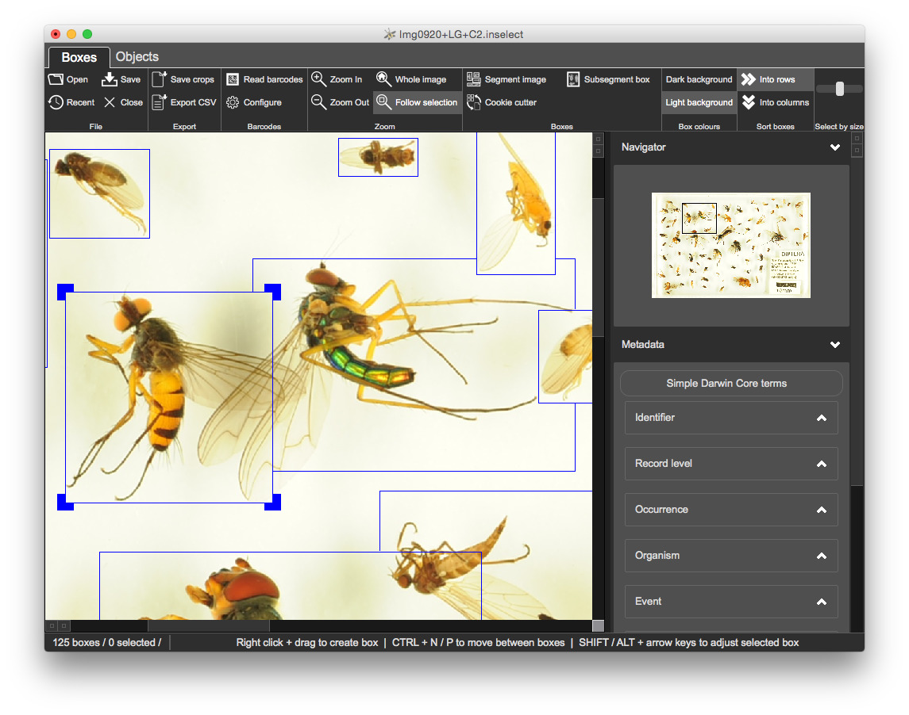
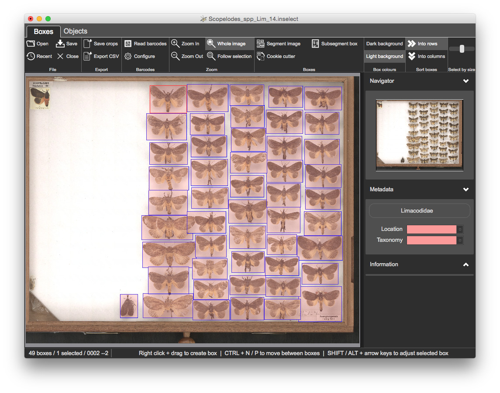
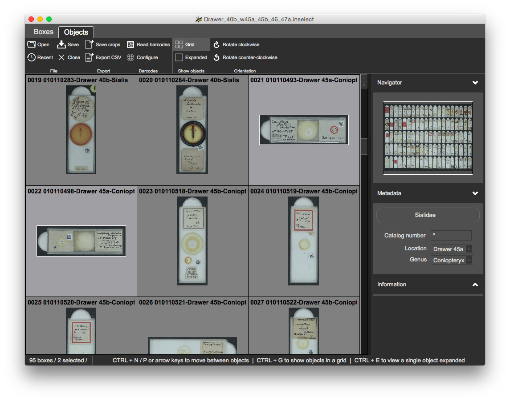
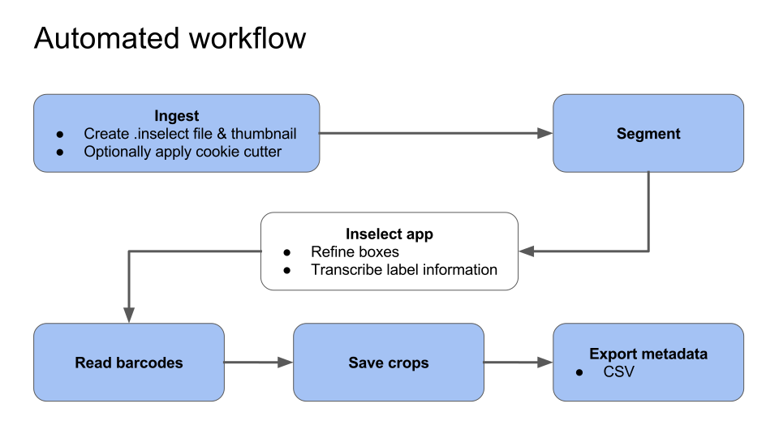

Lawrence N Hudson - software engineer, Ben W Price - curator of small orders and Natalie Dale-Skey - curator of Hymenoptera
This workshop will give a comprehensive overview of the Inselect desktop software and its associated command-line tools.
This workshop will cover
CSV files;Inslect has received support from
.dmg file.msi files - amd64 if using 64-bit Windows, win32 if using 32-bit WindowsNatural history collections are vast and varied, providing quite a few challenges when digitising them.
At the Natural History Museum, London, there are an estimated 33 million insect specimens, housed in 130 thousand drawers:
The challenge is to efficiently get a single image of each object along with its associated metadata
Inselect aims to solve some of the problems associated with whole-drawer imaging
Start Inselect. You should see a list of keyboard shortcuts.

On Windows, many shortcuts are activated by holding down the CTRL key together with another key. On a Mac, the command button (⌘) is used instead of CTRL. This workbook uses CTRL - if you are on a Mac, press ⌘ whereever you see CTRL written.
There are two 'views' of an Inselect document.
This holds a zoomable, low res version of the whole drawer image together with bounding boxes:

This shows a grid of icons, one icon for each bounding box:

The toolbar offers functions relevant to the currently selected view. The status bar at the bottom shows some useful feedback.
A 'minimap' thumbnail image and indicates where the Boxes view is zoomed to:

Metadata templates give you control over the fields and validation:

Some information about the loaded document:

Many digitisation pipelines use TIFF images. Whole-drawer TIFF images can be extremely large - up to 800MB is common. The examples in this worksheet use JPG files in order to minimize amount of data that you need to download.
Objective: to place a bounding box around each object in an image and export each image crop to its own JPG file.
This example will cover
1.InsectSoup/Img0920+LG+C2.jpg - an insect soup image of Diptera - true flies
Use the open file using one of
CTRL + O or
Inselect has created two files
Img0920+LG+C2.inselect
This is a small file that will contain information about bounding boxes and their associated metadata.
Img0920+LG+C2_thumbnail.jpg
JPG is a once-only operationJPG is very quick to read - far quicker than the large high-resolution TIFF files that are typically used in digitisation programmesOn the 'Boxes' view you can zoom in and out by
CTRL and spinning the mouse wheel up or down⌘ and swiping up or down with two fingers on trackpadCTRL and pressing the + or - keysYou can pan around the image by
You can create boxes with
You can select boxes
CTRL + mouse click to toggle a boxCTRL + ACTRL + DYou can move selected boxes using
Creating boxes by hand is silly - we want to minimise manual steps and get the computer to do the hard work for us.
Tun Inselect's segmentation algorithm
F5Inselect will attempt to detect individual objects within the image and place a bounding box around each. It uses a general purpose algorithm that works well with many of the different specimen types that we tried.

The segmentation does a reasonable job but is not perfect - some manual refinement is required.
We will check and refine each of the bounding boxes created by the segmentation algorithm. We will also create any bounding boxes that are missing.
Z to zoom to the current selectionCTRL + N to go to next boxCTRL + P to go to the previous boxDeleteCTRL + ⌫You can adjust boxes using
SHIFT + arrow keys moves the bottom right of the boxALT + arrow keys moves the top left of the boxThis often happens when objects slightly overlap e.g., insect wings. We could resize the large box and create new ones but this is uneccesary manual work.
SHIFT + click on the approximate centre of object within the bounding box - Inselect marks each point with a crosshair
Run the 'Subsegment box', either from the toolbar or with F6

Once you are happy with the bounding boxes, click on 'Save crops' in the 'Export' section of the toolbar.

JPG - we could ask Inselect to export to another image format - this will be covered laterObjective: to configure and use Inselect metadata templates.
This example will cover
CSV filesOpen 2.Metadata\Scopelodes_spp_Lim_14.inselect

You have complete control over metadata fields and validation through .inselect_template files, which are simple text files that you can edit using any good text editor.
Templates/limacodidae.inselect_template template by clicking on the Simple Darwin Core button and clicking Choose...Location and Taxonomy fields are both mandatory - newly created bounding boxes have no metadata, so all of the bounding boxes are shaded pink to indicate a validation probem
Click on any of the bounding boxes. The Location and Taxonomy fields are both coloured pink, indicating a validation problem

Location to Drawer 1Taxonomy to Scopelodes
Let's set the metadata for all boxes
CTRL + A to select all boxesLocation to Drawer 1 and Location to Scopelodes
The metadata panel on the right shows Simple Darwin Core fields
Files are in a format called YAML (YAML Ain't a Markup Language - http://yaml.org) - a structured text format. A reference and examples template files are at https://github.com/NaturalHistoryMuseum/inselect-templates - open this page in a new browser tab and have a quick look through it.
Open limacodidae.inselect_template in your text editor:
Name: Limacodidae
Object label: '{Taxonomy}-{Location}-{ItemNumber}'
Fields:
- Name: Taxonomy
Mandatory: true
Choices:
- Anaxidia
- Anepopsia
- Apodecta
- Birthamoides
- Calcarifera
- Chalcocelis
- Comana
- Comanula
- Doratifera
- Ecnomoctena
- Elassoptila
- Eloasa
- Hedraea
- Hydroclada
- Lamprolepida
- Limacochara
- Mambara
- Mecytha
- Parasoidea
- Praesusica
- Pseudanapaea
- Pygmaeomorpha
- Scopelodes
- Squamosa
- Thosea
- Name: Location
Mandatory: true
Choices:
- Drawer 1
- Drawer 2
- Drawer 3
- Drawer 4When you come to create your own .inselect_template files, it is best to modify an existing template to suit your needs.
You will append a new, optional free-text field - Notes - to the template.
Click 'Export CSV' in the toolbar and open the CSV file in Excel, OpenOffice or similar.
Columns are
Cropped_image_name - the filename of the cropNormalisedLeft, NormalisedTop, NormalisedRight, NormalisedBottom
b. coordinates of the thumbnail image - ThumbnailLeft, ThumbnailTop, ThumbnailRight, ThumbnailBottom
c. coordinates of the original full-resolution image - OriginalLeft, OriginalTop, OriginalRight, OriginalBottom
TaxonomyLocationNotesOur third example is another SatScan image, this time of microscope slides arranged in a template. Each of the slides contains a DataMatrix barcode and we will look at Inselect's barcode reader
Objective: to read barcodes on microscope slides, rotate each slide to be in the correct orientation and to export cropped images.
This example will cover
Templates/sialidae.inselect_template
TIFF files3.Barcodes/Drawer_40b_w45a_45b_46_47a.inselect
There are 100 sockets but automatic segmentation has created 102 boxes. Some of the sockets do not contain slides but contain red markers that indicate the location and genus of the slides that follow:

Once refined, you should have 95 bounding boxes:

Open Templates/sialidae.inselect_template in your text editor
The 'catalogNumber' field contains Regex parser: '^[0-9]{9}$'
If you do not know what a regular expression is, do not worry
Select 'Configure' from the 'Barcodes' section of the toolbar:

Read barcodes with F7.
You will select the relevant groups of slides and set their values of location and genus.
Reminders
CTRL and left-clickingOnce completed, all metadata should be valid with all boxes clear:

You can sort boxes either by rows or columns.
CTRL + N a few times and see how selected box changesCTRL + N a few times againThe selected sort option is applied when you segment an image.
Switch to the Objects view.
Some relevant shortcuts
CTRL + 1 / CTRL + B - selects the Boxes viewCTRL + 2 / CTRL + J - selects the Objects viewCTRL + PgUp / CTRL + PgDown on WindowsCMD + [ / CMD + ] on MacThis view shows crops on a grid with a square for each bounding box, along with each box's number and object label:

EnterCTRL + ECTRL + N and CTRL + P - Next / PreviousEnterCTRL + GSelection
CTRL + A and CTRL + D - the standard shortcuts for Select all and Select none - also work hereYou will rotate each crop so that labels are in the correct orientation.
CTRL + R to rotate rightCTRL + L to rotate left
Click 'Save crops'
Open the directory containing the crops.
TIFF files, as specified in the metadata templateThe microscope slides are arranged on a 20 x 5 template. If you are regularly dealing with hundreds or thousands of scanned images with an identical arrangement of objects then automatic segmentation is imperfect.
Objective: to create and use cookie cutter templates.
This example will cover creating and applying cookie cutter template.
With
Drawer_76_77_78_79_81_83a.inselectCheck that the 100 bounding boxes are in the right places
20 x 5 slidesInselect sets the new file as the current cookie cutter
Open Drawer_60b_61_62a.jpg Inselect creates boxes using cookie cutter.
Objective: to ingest the five example image files in 5.CommandLineTools and apply the cookie cutter that you previously created.
This example will provide an introduction to Inselect's command line tools.

Each of the operations shown in blue has an associated command-line tool. You can pick and choose the relevant command-line tools together with cookie cutters and metadata templates to integrate Inselect into your existing workflows. Descriptions of each tool are below.
ingest.inselect fileJPG; you can provide the resolutionsegment.inselect file in the directory
read_barcodes.inselect file in the directory
export_metadata.inselect file in the directory
CSV file of metadatasave_crops.inselect file in the directory
Start the Windows command prompt. The following code fragments assume that you installed Inselect to the default location of C:\Program Files\inselect. You should alter the paths as required, if you installed the program to a different directory.
Each tool supports the --help argument:
C:\Program Files\inselect\ingest.exe --helpYou should see
usage: ingest.exe [-h] [-c COOKIE_CUTTER] [-w THUMBNAIL_WIDTH] [--debug] [-v]
inbox docs
Ingests images into Inselect
positional arguments:
inbox Source directory containing scanned images
docs Destination directory to which images will be moved
and in which Inselect documents will be created. Can
be the same as inbox.
optional arguments:
-h, --help show this help message and exit
-c COOKIE_CUTTER, --cookie-cutter COOKIE_CUTTER
Path to a '.inselect_cookie_cutter' file that will be
applied to new Inselect documents
-w THUMBNAIL_WIDTH, --thumbnail-width THUMBNAIL_WIDTH
The width of the thumbnail in pixels; defaults to 4096
--debug
-v, --version show program's version number and exitThe 5.CommandLineTools directory contains five JPG files. Run
C:\Program Files\inselect\ingest.exe --thumbnail-width 8000 \
--cookie-cutter <path to the inselect_cookie_cutter file> \
<path to the 5.CommandLineTools directory> \
<path to the 5.CommandLineTools directory>ingest tool report?ingest tool behave?